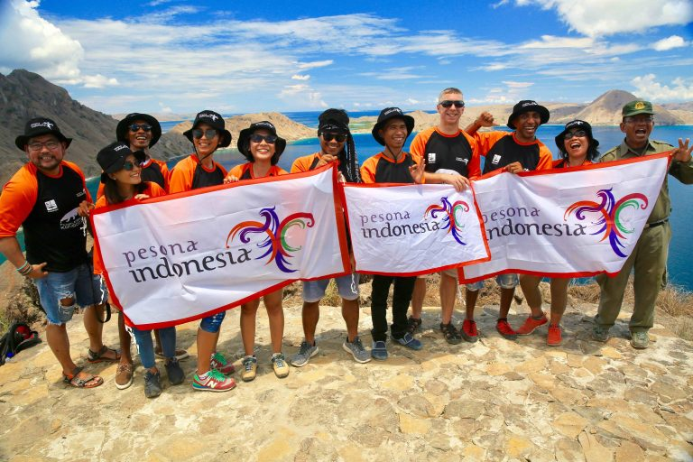
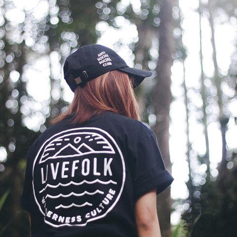
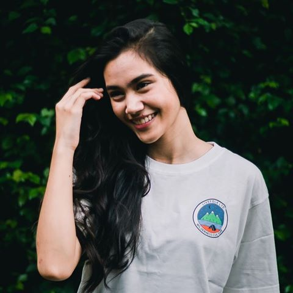
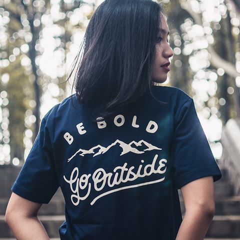
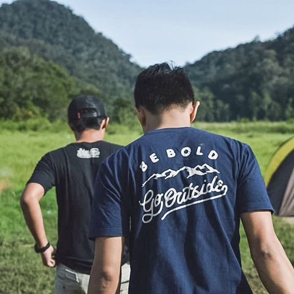

Tujuan Wisata

Papua & Maluku
Let's Explore beautiful Papua with many beach!
Bali & Nusa Tenggara
Let's find The Hidden Paradise
Jawa
Let's Explore beautiful Jawa with many mountain!
Berita
Festival Bahari Kepri 2017 di Tanjung Pinang
Mengulang kesuksesan acara ini sebelumnya, Festival Bahari Kepri kembali digelar tahun ini selama sembilan hari berturut turut pada 13 – 21 Oktober 2017 di Tanjung Pinang, Provinsi Kepulauan Riau. Festival tersebut akan dirangkai berbagai atraksi wisata untuk menarik minat wisatawan mancanegara dan nusantara yang berkunjung ke Tanjungpinang dan juga mensasar wisatawan negara tetangga terutama Singapura dan Malaysia.

Festival Bahari Kepri 2017 di Tanjung Pinang
Mengulang kesuksesan acara ini sebelumnya, Festival Bahari Kepri kembali digelar tahun ini selama sembilan hari berturut turut pada 13 – 21 Oktober 2017 di Tanjung Pinang, Provinsi Kepulauan Riau. Festival tersebut akan dirangkai berbagai atraksi wisata untuk menarik minat wisatawan mancanegara dan nusantara yang berkunjung ke Tanjungpinang dan juga mensasar wisatawan negara tetangga terutama Singapura dan Malaysia.

Loksado: Menyambangi Pesona Alam dan Budaya Suku Dayak di Pegunungan Meratus
Daerah terpencil di Kalimantan Selatan ini dikenal dengan nama Loksado, sebuah kecamatan di Kabupaten Hulu Sungai Selatan yang menjadi rumah suku Dayak dimana mereka hidup lestari dengan lanskap alam yang megah. Menuju tempat ini maka Anda akan menjelajahi jantung pegunungan Meratus sekira dua setengah jam dari Banjarmasin, ibu kota Kalimantan Selatan. Berikutnya bersiaplah terhayut dalam keindahan panorama hutan tropis yang dihiasi rentetan air terjun dan aliran sungai yang membelah lebat hutannya

Kepulauan Widi: Surga Wisata Mancing di Indonesia
Banyak orang mengibaratkan Kepulauan Widi di Kabupaten Halmahera Selatan sebagai Maladewa-nya Indonesia. Bisa jadi tidak berlebihan mengingat keindahan dan kealamian yang dipancarkannya. Pulau Widi sendiri tidak berpenghuni dan terletak di tengah laut lepas menjadikan pulau ini begitu istimewa.Kepulauan Widi bisa dikatakan sebagai kepulauan terindah di Provinsi Maluku Utara sehingga tidak heran tempat ini sering dikunjungi wisatawan mancanegara meskipun akses terbilang tidak mudah dan belum tersedia fasilitas pendukung di tempat ini.
Aktifitas
Spot Pantai di Indonesia untuk Beratraksi Dengan Hoverboard
Indonesia mempunyai pesona alam yang indah, salah satunya destinasi yang bisa kamu rasakan adalah pantai-pantai dengan keeksotisannya. Bukan hanya dari keindahanya saja, tapi dilihat dari ketenangan airnya pun bisa menentukan water sport yang bisa kamu mainkan. Pantai yang lebih tenang bisa membuatmu bebas beratraksi di atas hoverboard. Let’s find out more about these anti mainstream beaches!
Shop

Live Folk Culture Tees
Made with cotton combed 30s
Availabe L,XL
IDR. 120K

Youth Chigga Tees
Made with cotton combed 30s
Availabe M,L,XL
IDR. 130K

Be Bold Woman Tees
Made with cotton combed 30s
Availabe M,L,XL
IDR. 120K

Be Bold Man Tees
Made with cotton combed 24s
Availabe M,L,XL
IDR. 125K